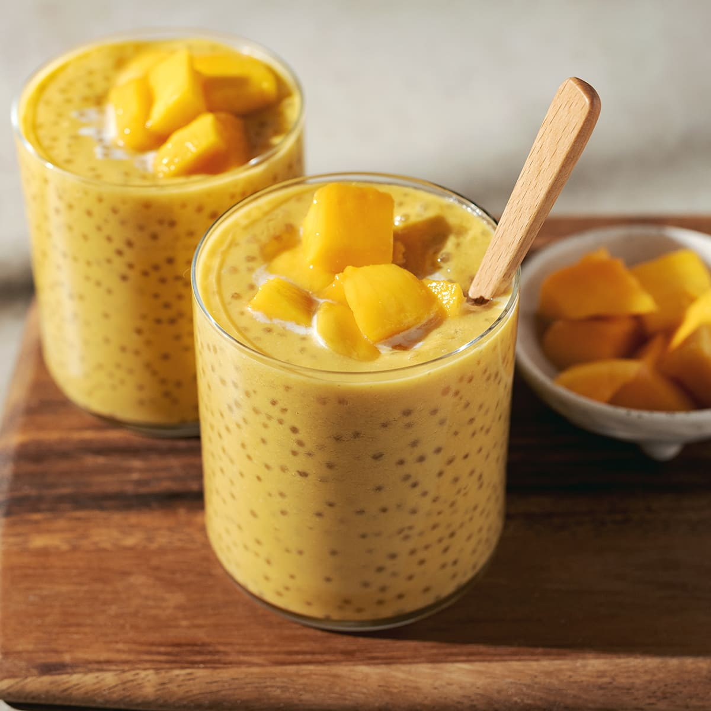

Refreshing Mango Sago

This dessert is a favorite during the summer with its tropical and creamy taste. The mix of mango with cream and sago
creates a comforting and cooling taste that will make you come back for more. Mango is personally my favorit fruit
which is why I consider mango sago as the most superior version of the sago series of desserts. The best part that this
is so easy to make in a big batch and doesn't require technical skill.
Ingredients
- 3 (or more) ripe mangoes
- 3 tablespoon small tapioca/sago pearls
- 1/4 cup sweetened condensed milk
- 3/4 cup evaporated milk
- 3/4 cup coconut milk
Steps
- Bring a pot to a boila nd cook the sago until trnaslucent (approx. 15 min).
- Dice the mangoes while the sago is boiling.
- After the sago is cooked, wash them in cold water and let sit in a bowl of water to rpevent sticking.
- Mix the mangoes with the condensed milk (optionally blend if you want the yellow color) and evaporated milk.
- Add the tapioca pearls and coconut milk.
- Serve chilled